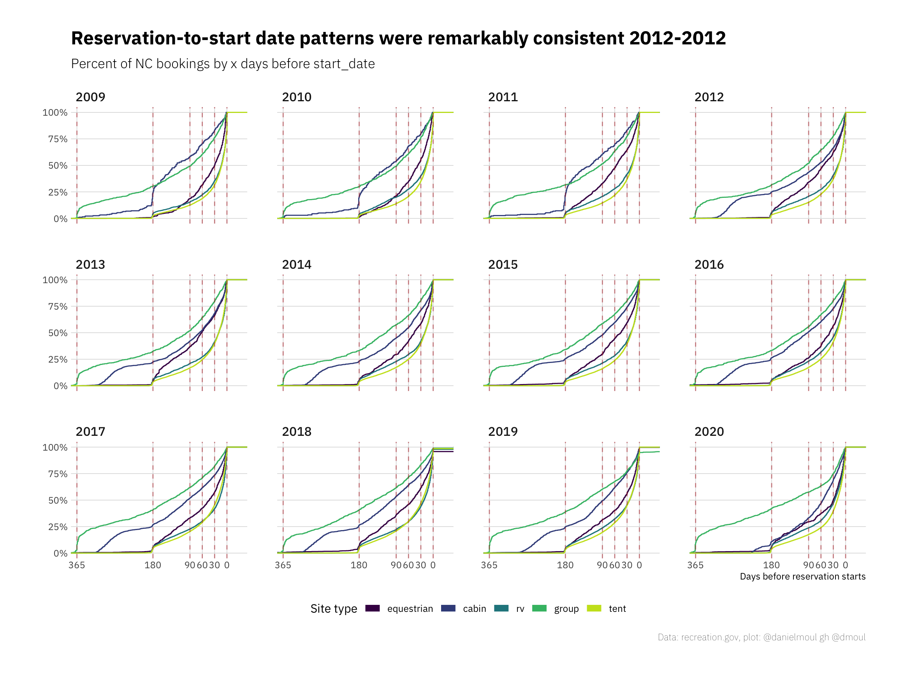
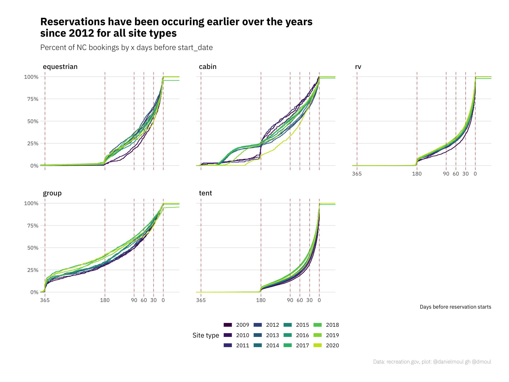
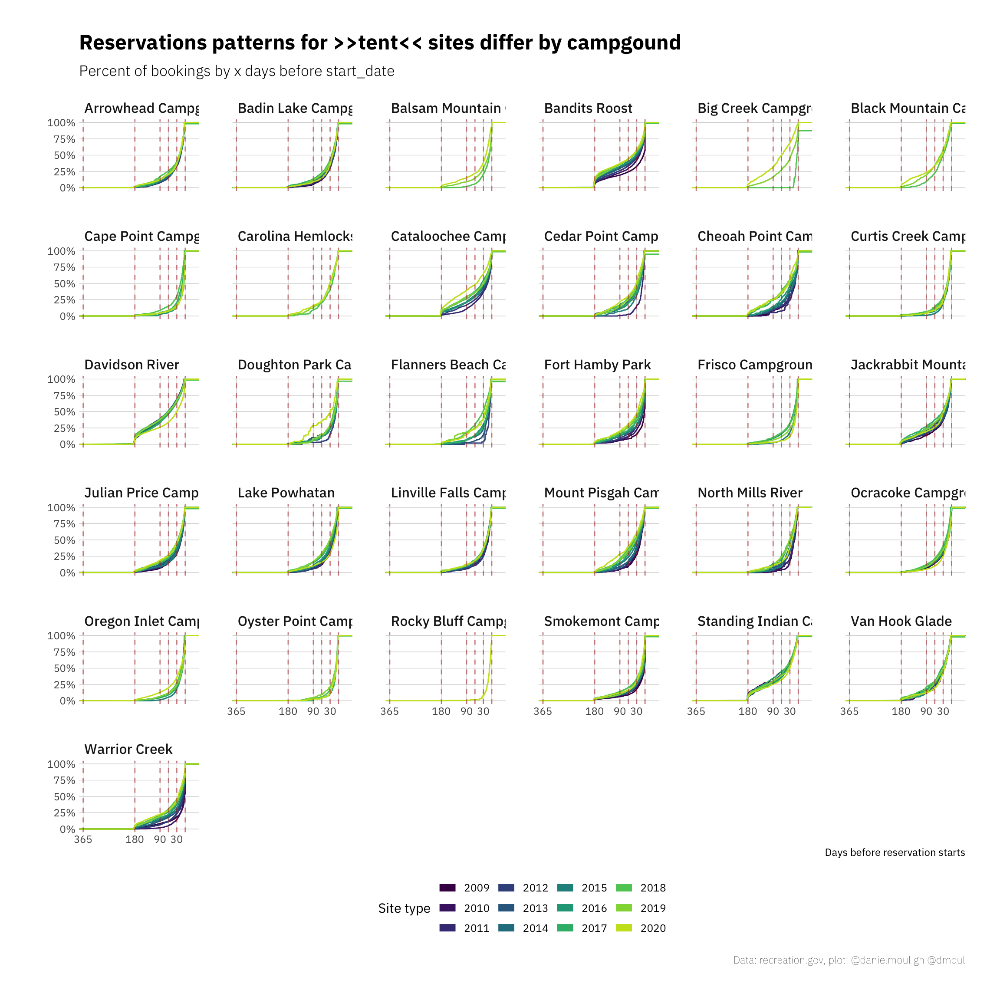
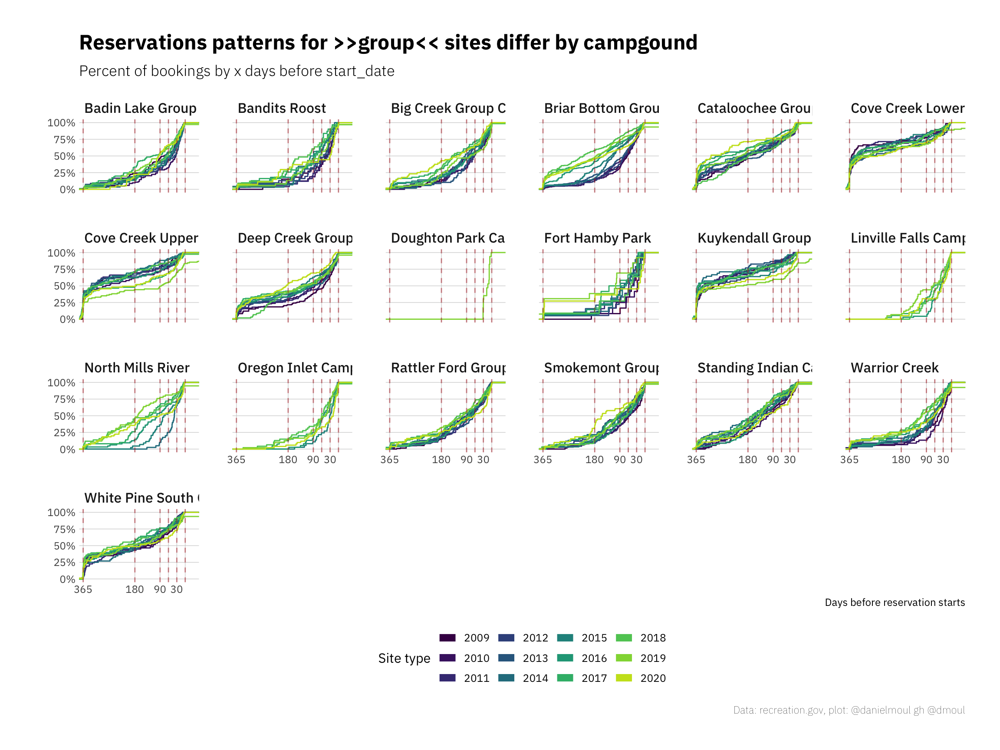
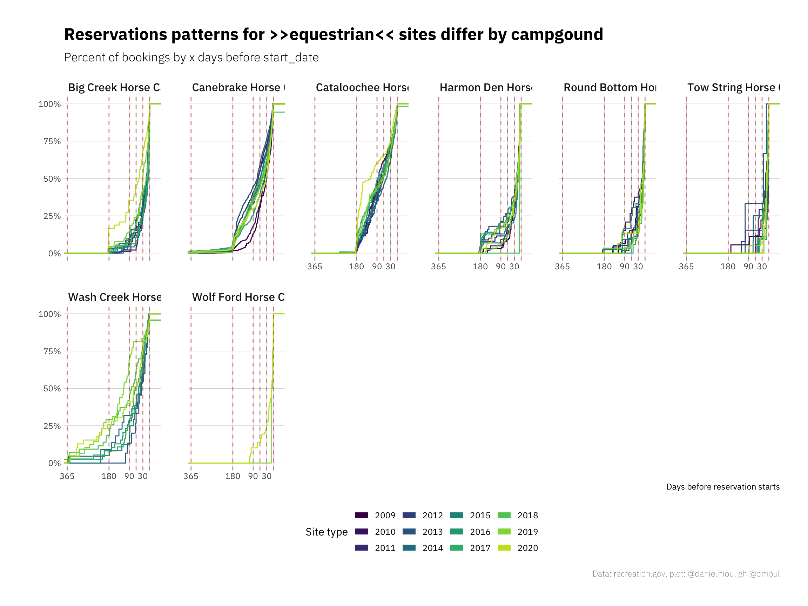
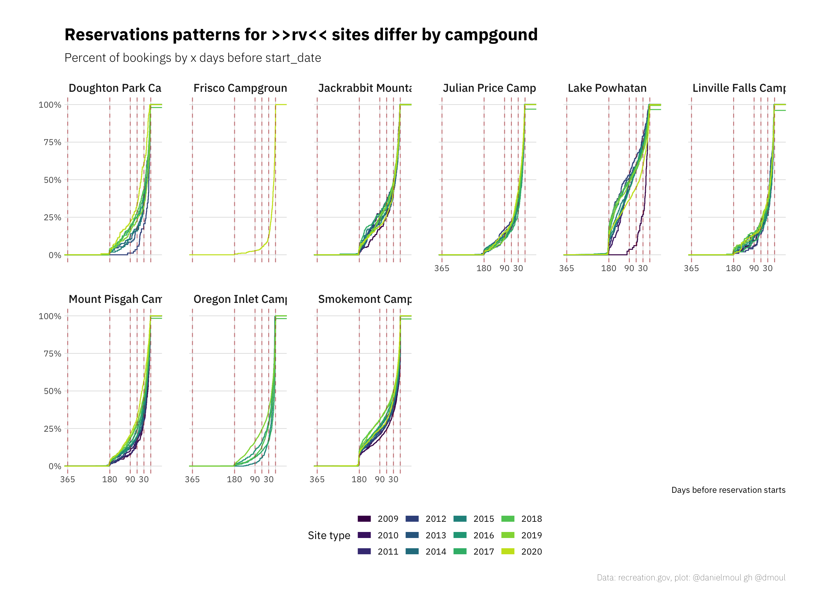
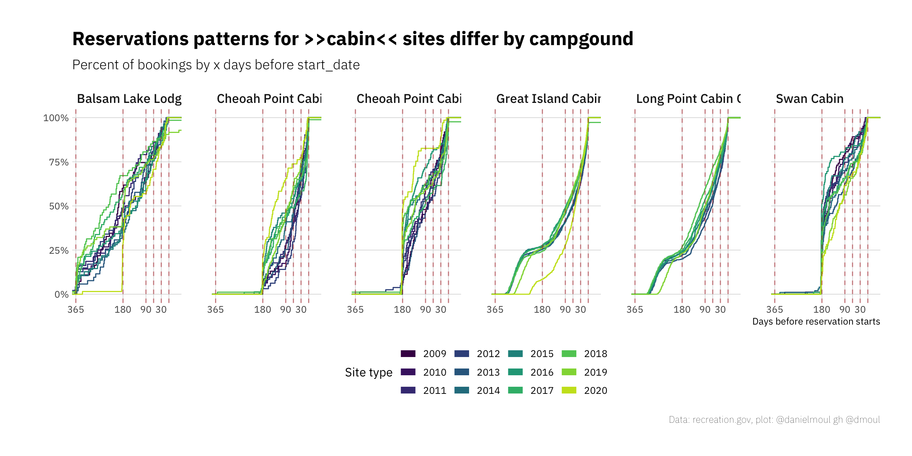

5 Camping reservations
5.1 How far ahead do people reserve?
As one might expect, sites in limited supply are booked earlier: more than a third of group sites and more than a quarter of of cabins are booked six months before the start date. In contrast: consistently, only a third of tent sites are reserved 30 days in advance.
It looks like in the early years one could reserve most cabins with 6 months lead time. Then for 2012 and later years the cabin policy changed to 12 months lead time.
Tent, RV, and equestrian sites can be reserved six months in advance.
The data for 2018 and 2019 seem to have some errors, which are visible in the upper right of each plot: why are there order dates after start_date? These are the only two years in which this pattern is visible in the plots.
I note again here that some parks have sites that are first-come, first-serve (i.e., they are not reservable). By definition those sites do not show up here.

There has been a general trend towards reserving earlier:

The plots above mask differences in campgrounds. As you would expect some parks are more popular then others, with a greater portion of the reservations occurring earlier. Over the years, most properties are seeing earlier reservations. Swan Cabin is experiencing the opposite trend.
The most popular group campgrounds seem to be Cove Creek Upper and Lower Group Camp, and Kuykendall Group Camp. Other group campsites are included with other site types, so if they have the same dynamic, it’s not visible in these plots.
Cabins and Group Camps are the most likely to show a linear-like increase in reservations over time (after the early birds reserve as soon as reservations open).
Davidson River and Big Creek have about 50% of tent sites booked 60 days before start date. Most don’t achieve that until 30 days or fewer before start date. It’s interesting that 6 of the 32 campgrounds started offering reservations through recreation.gov in recent years. I assume in prior years these sites were not reservable.

Cove Creek and Kuykendall group camps seem most popular, with nearly half the group reservations made a year in advance–as soon as the reservations opened. Next most popular are by Cataloochee and White Pines. Briar Bottom and North Mills River have seen remarkable increases in early reservations in recent years.

Wash Creek looks like the only equestrian camp to allow bookings a year in advance. Among the rest, Cataloochee has the most consistent reservation pattern over the years.

With RV sites, Lake Powhatan and Smokemont have the biggest early surge when reservations open six months in advance.
While Powhatan has been 75% booked 30 days in advance, Linville Falls has been less than 50% booked 15-20 days ahead.

For the camps that allow cabin reservations a year in advance, Balsam Lake books faster than Great Island or Long Point. Of those that take bookings six months in advance, Swan books faster than Cheoah Point.
